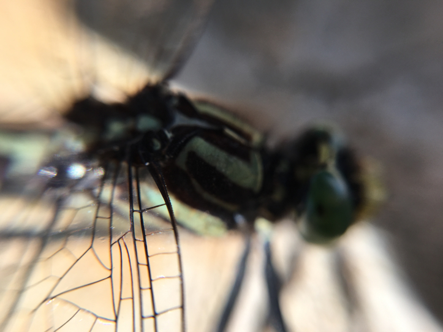

ACCORDING to one mode of regarding those two classes of mental action, which are called reason and imagination, the former may be considered as mind contemplating the relations borne by one thought to another, however produced, and the latter, as mind acting upon those thoughts so as to color them with its own light, and composing from them, as from elements, other thoughts, each containing within itself the principle of its own integrity. The one is the [Greek], or the principle of synthesis, and has for its objects those forms which are common to universal nature and existence itself; the other is the [Greek], or principle of analysis, and its action regards the relations of things simply as relations; considering thoughts, not in their integral unity, but as the algebraical representations which conduct to certain general results. Reason is the enumeration of qualities already known; imagination is the perception of the value of those qualities, both separately and as a whole. Reason respects the differences, and imagination the similitudes of things. Reason is to imagination as the instrument to the agent, as the body to the spirit, as the shadow to the substance.
Poetry, in a general sense, may be defined to be “the expression of the imagination”: and poetry is connate with the origin of man. Man is an instrument over which a series of external and internal impressions are driven, like the alternations of an ever-changing wind over an Æolian lyre, which move it by their motion to ever-changing melody. But there is a principle within the human being, and perhaps within all sentient beings, which acts otherwise than in the lyre, and produces not melody alone, but harmony, by an internal adjustment of the sounds or motions thus excited to the impressions which excite them. It is as if the lyre could accommodate its chords to the motions of that which strikes them, in a determined proportion of sound; even as the musician can accommodate his voice to the sound of the lyre. A child at play by itself will express its delight by its voice and motions; and every inflexion of tone and every gesture will bear exact relation to a corresponding antitype in the pleasurable impressions which awakened it; it will be the reflected image of that impression; and as the lyre trembles and sounds after the wind has died away, so the child seeks, by prolonging in its voice and motions the duration of the effect, to prolong also a consciousness of the cause. In relation to the objects which delight a child these expressions are what poetry is to higher objects.
Regan Layman